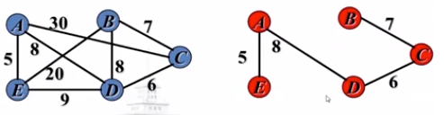
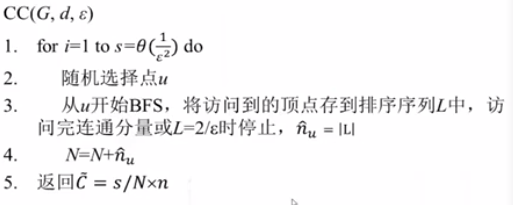
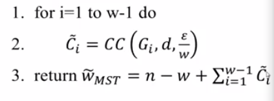

本文为icourse哈工大课程《大数据算法》笔记
大数据算法概述
大数据4个V
- Volume：数据规模大
- Variet：数据类型多，多源异构
- Velocity：处理速度快
- Value：基于深度分析的新价值
大数据上问题求解计算问题的过程
- 先判断是否可以计算。一个普通数据量上都不能计算的问题，在大数据上，也不可计算
- 判断在现有的资源约束下，时间约束下，数据量下，是否是能行可计算
- 算法分析与设计
- 编程实现算法(Hadoop/Spark)
- 软件系统构造
大数据算法定义
在给定的资源约束下，以大数据为输入，在给定时间约束内可以生成满足给定约束结果的计算。
大数据算法可以不是
- 精确算法：很多情况下，在有限资源下，可以选择舍弃精度换时间
- 内存算法：难以在内存中存储全部数据，有时候考虑外存和多级存储器
- 串行算法：大数据可以考虑在多台机器上执行
- 仅在电子计算机上运行的算法：可以有人来参与到程序的执行
大数据不仅是：
- 云计算：大数据还可以在一些计算能力弱的平台上进行（如手机）
- MapReduce：除了并行模型，还有很多其他大数据的编程模型，如设计亚线性算法，或者引入人的参与
- 大数据分析与挖掘的算法：一些基础问题，例如排序于查找，在大数据环境下都需要重新设计
大数据中的两个特点Volume和Velocity决定了大数据算法的设计。我们希望扫描数据$O(n)$或者$O(logn)$时间来解决问题。
大数据算法设计难度
- 访问全部数据时间太长
- 读取部分数据（时间亚线性算法）
- 数据难以放入内存计算
- 将数据存储到磁盘（外存算法）
- 仅基于少量数据进行计算（空间亚线性算法）
- 单个计算机难以保存全部数据，计算需要整体数据
- 并行处理（并行算法）
- 计算机计算能力或者知识不足
- 人来参与（众包算法）
大数据算法设计技术
- 精确算法：大数据在精确计算上的应用
- 并行算法
- 近似算法：牺牲一部分精确性，在多项式时间内，给出精确性，并控制误差
- 随机算法：利用随机化的方法，进行抽样
- 在线算法/数据流算法：当数据源源不断时，在有限时间和空间内得到结果
- 外存算法：当数据无法存储在内存时
- 面向新型体系结构的算法：GPU大规模并行
- 现代优化算法：蚁群算法，模拟退火，进化算法
大数据算法分析
- 时间空间复杂性分析：和传统算法分析一致
- IO复杂性分析：大数据算法区别于传统内存算法，IO会直接影响算法性能
- 结果质量分析：（在得不到精确解时，要分析近似比；对于数据流算法，分析competitive radio，即知道整个数据集和只知道当前情况下，算法结果的区别）
- 通讯复杂性：区别于传统单机结构，大数据的多机并行执行涉及到通讯复杂性问题
亚线性算法
时间/空间/能量/通讯/IO消耗是：$o(输入规模)$
亚线性时间算法
- 亚线性时间近似算法
- 例：给一个社交网络，在不访问所有节点的情况下，求平均每个节点的度
- 性质检测算法
亚线性空间算法
- 面向源源不断的数据流
- 例：对一个几乎无限长的序列，不保存所有数字情况下，求中位数
水库抽样（空间亚线性算法）
输入：一组数据，大小未知
输出：这组数据的$k$个均匀抽样
要求：
- 仅扫描一次数据
- 空间复杂度$O(k)$，即：不能保存所有数据
- 扫描到数据前$n$个数字时候$(n>k)$，保存当前已扫描数据的$k$个均匀抽样
算法：
- 申请一个长度为$k$的数组$A$保存抽样
- 保存首先接收到的$k$个元素
- 当接收到第$i$个新元素的$t$时，以$k/i$的概率随机替换$A$中的元素(即：生成$[1,i]$间的随机数$j$,若$j \leq k$,则以$t$替换$A[j]$)
性质
该采样是均匀的
第$i$个数被第一次选中的概率是$\frac{k}{i}$，之后第$i+1$次中，第$i$个数依旧不会替换的概率是$(1- \frac{1}{i+1})$。依此类推，第$i$个数在第$n$个数到来后，依旧被保留在抽样中的概率是：它和$i$是无关的，即每个数字无论到来的次序，被保留的概率均等，所以采样是均匀的。
空间复杂度$O(k)$
平面图直径计算（时间亚线性算法）
输入：$m$个顶点的平面图，任意两点之间的距离存储在矩阵$D$中，即点到点的距离是$D_{ij}$
- 输入大小是:
- 最大的$D_{ij}$是图的直径
- 点之间的距离对称且满足三角不等式
输出：图的直径和距离最大的$D_{ij}$
要求：运行时间为$o(n)$，不能遍历所有数据
无法在要求的时间内得到精确解，寻找近似算法
近似算法：
- 任意选择$k \leq m$
- 选择使得$D_{kl}$最大的$l$
- 输出$D_{kl}$和$(k,l)$
该算法只访问了矩阵一行数据，显然不能精确计算结果，但是我们可以分析他的误差范围，假设$D_{ij}$是最优解，根据三角不等式：
又因为$D_{kl}$在矩阵$k$行/列中最大，所以
即
因此近似比2
运行时间
近似算法
- 什么是近似算法
- 近似算法是用来解决优化问题
- 能够给出优化问题的一个近似优化解的算法
- 近似算法解的近似度
- 问题每一个可能的解都具有一个代价
- 问题的优化解决可能具有最大或者最小代价
- 我们希望寻找问题的一个误差最小的近似优化解
- 我们需要分析近似解代价和优化解代价的差距
- Ratio Bound（近似比）
- 相对误差
- $(1+\epsilon)$-近似
Ratio Bound
设A是一个优化问题的近似算法，A具有Ratio Bound $p(n)$，如果
其中$n$是输入大小，$C$是A产生的近似解的代价，$C^{\ast}$是最优化解的代价。取$max$是为了应对最大化和最小化问题，使得结果$Ratio \text{总是} \geq 1$，$Ratio$越小越好。
- 最大化问题中，往往$C \leq C^{\ast}$，所以取$Ratio=\frac{C^{\ast}}{C}$
- 最小化问题中，往往$C \geq C^{\ast}$，所以取$Ratio=\frac{C}{C^{\ast}}$
相对误差
近似算法的相对误差定义为：
相对误差界定义为：
全0数组判定（时间亚线性判定算法）
输入：包含$n$个元素的0，1数组$A$
输出：$A$中的元素是否全是0
要求：运行时间为$o(n)$
判定问题的近似求解
- 输入满足某种性质或者远非满足此性质
判定问题的近似解的定义：输入满足某种性质或者远非满足此性质
$\epsilon$-远离
对于输入串$x$，如果从$x$到串的集合$L$中任意字符串的汉明距离至少为$\epsilon \vert x \vert$,则$x$是$\epsilon$-远离$L$的
在信息理论中，Hamming Distance 表示两个等长字符串在对应位置上不同字符的数目
算法描述
- 在$A$中随机独立抽取$s=\frac{2}{\epsilon}$个位置上的元素
- 检查抽样，若不包含1则输出“是”，否则输出“否”
精确性分析
- 如果$A$是全0数组，始终输出“是”
- 如果A是$\epsilon$-远离的，此时每位数为1的概率是$\epsilon$，不为1的概率是$1-\epsilon$。可以得到出错的概率小于$\frac{1}{3}$：
运行时间$O(s)$
证据引理
如果一次测试以大于等于$p$的概率获得一个证据，那么$s=\frac{2}{p}$轮测试得到的证据概率大于等于$\frac{2}{3}$
对于一个判定问题$L$，其查询复杂性$q(n)$和近似参数$\epsilon$的性质测试算法是一个随机算法，其满足对于给定$L$的是一个实例$x$，最多进行$q(\vert x \vert)$次查询，并满足下述性质：
- 如果$x$在$L$中，该算法最少$\frac {2} {3}$的概率返回“是”
- 如果$x$是$\epsilon$-远离L的，该算法以最少$\frac {2} {3}$的概率返回“否”
亚线性算法例析
数据流中频繁元素（空间亚线性）
数据流模型
- 数据是流动的，只能顺序的扫描一次或几次，复杂度不超过$O(n)$，需要能快速处理新到来的元素
- 数据可能是无限的，内存有限的。内存通常取$O(log^{k}n)$或$O(n^{\alpha}) \ \forall\alpha \lt 1$
- 希望维护一个中间内存结果（概要）来给出相关性质的一个有效估计
- 数据流模型适用于大数据（顺序扫描数据仅一次，内存亚线性）
数据流常见运算
常见的求数据流的$min$，$max$，$sum$通过比较大小和累加可以只借由一个寄存器$s$实现。此处的“概要”$s$是可以合并的：多个流放到不同的$s$里，最后可以通过比较$s$大小或求和合并。
频繁元素求解问题
问题：给出一个序列$L = x_1,x_2,…$，求出现最多次的元素。令：
- $m$：数据流中元素个数
- $n$：不同元素数量
频繁元素求解在搜索引擎优化问题中有广泛应用。求解该种问题基于一个假设：
Zipf原则：典型的频率分布是高度倾斜的，只有少数元素是频繁元素。
精确解：每个元素设置计数器，处理每个元素时增加对应元素的计数器。当内存只能提供$k$个计数器，$k << n$，问题就来了。
近似算法(MG算法)：
Misra Gries算法：
处理每个收到的元素$x$：
- 如果已经给$x$分配了计数器，增加计数
- 如果没有给$x$分配计数器，但计数器个数小于$k$，为$x$分配计数器，并设为1
- 否则，所有计数器减1，删除值为0的计数器
为了防止计数器减少导致的频繁元素出现次数计数减少，计：
- 整个结构的权重（计数器的和）记作$m^{\prime}$
- 整个数据流的权重（全部元素的数量）是$m$
- 每次计数器降低会减少$k$个计数，然后新输入元素此次出现，实际上少计入了$k+1$次元素，所以最多有$\frac{m-m^{\prime}}{k+1}$轮减少计数
即：估计值与真实值差最多是$\frac{m-m^{\prime}}{k+1}$，当数据流中元素总数远大于$\frac{m-m^{\prime}}{k+1}$，得到一个好的估计。
错误的界限和$k$成反比。计算时，可以记录$m$和$m^{\prime}$，然后估算出与真实值的误差。由于$zipf$原则，该算法长期有效。
最小生成树计数（时间亚线性的计算问题）
一般的求最小生成树的算法（贪心算法）是复杂度为$mlog(n)$的prime和kruskal算法，而大数据业务中尽可能实现线性或亚线性算法。
输入：无向有权联通图$G=(V,E)$，其顶点的度最大为$D$，边上的权来自整数集合$\lbrace 1,2,\dots,w \rbrace$
输出：图$G$的最小生成树的权重

可以利用特定子图联通分量的数量估计最小生成树的权重。假设所有边权重都是1或2，最小生成树的权重可以表示为
其中$\sharp N_i$是最小生成树中权重至少为$i$的的边的数量。因为最小生成树是连通图，$\sharp N_1$等于最小生成树边的数量，等于$n-1$，即：
如果把权重为2的边都去掉，最小生成树会变成由权重为1的边构成的若干个连通分量（单个节点也算一个连通分量），即：
对于一般情况：
- $G_i$：$G$中包含所有权重小于等于$i$的边的子图
- $C_i$：$G_i$中连通分量的个数
- 最小生成树权重大于$i$的边数为$C_i-1$
即：$\sharp_i$=最小生成树权重大于$i$的边数=图$G$中包含权重小于等于$i$的边的子图中的联通分量的个数-1
因此，最小生成树（Minimal Spanning Tree）的权重（weight）应该是：
证明：
令$\betai$为MST中权重大于$i$的边的个数，显然：每一条MST的边对$W{MST}$的贡献为1，每个权重为$i(i \gt 1)$的边额外贡献了$i-1$。即：
所以要近似计算$W_{MST}$，只需要估算$c_i$：
基础算法：联通分量个数的估计
- 输入：图$G=(V,E)$，有$n$个顶点，表示为邻接矩阵，节点最大度为$d$
- 输出：联通分量个数
- 精确解时间复杂性：$\Omega(dn)$
算法：利用随机化方法，估计联通分量个数$\sharp CC$
- $\sharp CC \pm \epsilon n$的概率$\ge \frac{2}{3}$
- 运行时间和$n$无关
思路：
- 设$C$为连通分量个数
- 对于每个节点$u$，$n_u$表示$u$所在的连通分量节点数
- 对于每个联通分量$A$，$\Sigma_{u \in A} \frac{1}{n_u} = 1$
- 故对于整个图$V$，有：$\Sigma_{u \in V} \frac{1}{n_u} = C$
- 通过估计抽样顶点的$n_u$来估计这个和$C$
- 如果$u$所在的联通分量很小，其规模可以通过BFS估计
- 如果$u$所在的连通分量很大，$\frac{1}{n_u}$很小，对和$C$的贡献很小
- 可以在几步内完成BFS
- 令$\hat n_u = min \lbrace n_u, \frac {2}{\epsilon} \rbrace$
- 当节点数$n_u$小于$\frac {2}{\epsilon}$，$\hat n_u = n_u$
- 否则，$\hat n_u = \frac {2}{\epsilon}$，因此$0 \lt \frac {1}{\hat n_u} - \frac {1}{n_u} \lt \frac{1}{\hat n_u} = \frac{\epsilon}{2}$
- 在这种情况下，对$C$的估计
- 则$\vert C^{\prime} - C \vert = \vert \Sigma(\frac{1}{\hat n_u} - \frac{1}{n_u}) \vert \lt \frac {n \epsilon}{2}$
估计联通分量个数的伪码：

该算法循环$\frac{1}{\epsilon^2}$次，每次循环最多执行$\frac{2}{\epsilon}$次（做BFS），然后还是维护$L$的有序性，需要用到一个平衡二叉树来保持$L$。所以运行时间为$O(\frac{d}{\epsilon^3} log \frac {1}{\epsilon})$
接下来分析抽样和遍历每个点精确求BFS的结果查大于$\frac{\epsilon n}{2}$概率是小于$\frac{1}{3}$的，即：
来说明估计值和真实值相差过大的概率很小。
- 对于采样种的第$i$个节点$u$，令$Y_i = \frac {1} {\hat n_u}$
- $Y=\Sigma_{i=1}^s Y_i = \frac {s \bar{C}}{n}$
- $E[Y] = \Sigma{i=1}^s E[Y_i] = sE[Y_1] = s \times \frac{1}{n} \Sigma{u \in V} \frac{1}{\hat{n_v}} = \frac{s \hat C}{n}$
Hoeffding界：
$Y1,Y_2\dots Y_s$为$[0,1]$区间内独立同分布的随机变量，令$Y=\Sigma{i=1}^{s} Y_i$，则$Pr[\vert Y - E[Y] \vert \geq \delta] \leq 2e^{\frac {-2\delta^{2}}{s}}$
因此，下列事件发生的概率大于$\frac {2}{3}$:
综上所述，有$n$个顶点的图中，若其顶点的度至多为$d$，则其连通分量的估计误差最多为$\pm \epsilon n$

分析：
- 假设$C_i$的估计都是正确的，$\vert \bar{C_i} - C_i \vert \leq \frac{\epsilon}{w} n$，则
- $Pr[所有w-次估计都正确] \geq (\frac{2}{3})^{w-1}$
- 这还不够好，可以通过CC算法，取合适的$s$值，使每一轮的错误概率$\leq \frac{1}{3w}$，应当取多少
乘近似：
- 对于MST的代价，可以从加的近似导出乘法的近似
- $\epsilon n$加近似
- $(1 \pm 2\epsilon)$乘近似
序列有序的判定（时间亚线性算法的判定问题）
输入：$n$个数的数组，$x_1,x_2,\dots,x_n$
输出：这个数组是否有序?
常规算法需要访问$n$个数，时间复杂度$\Omega(n)$